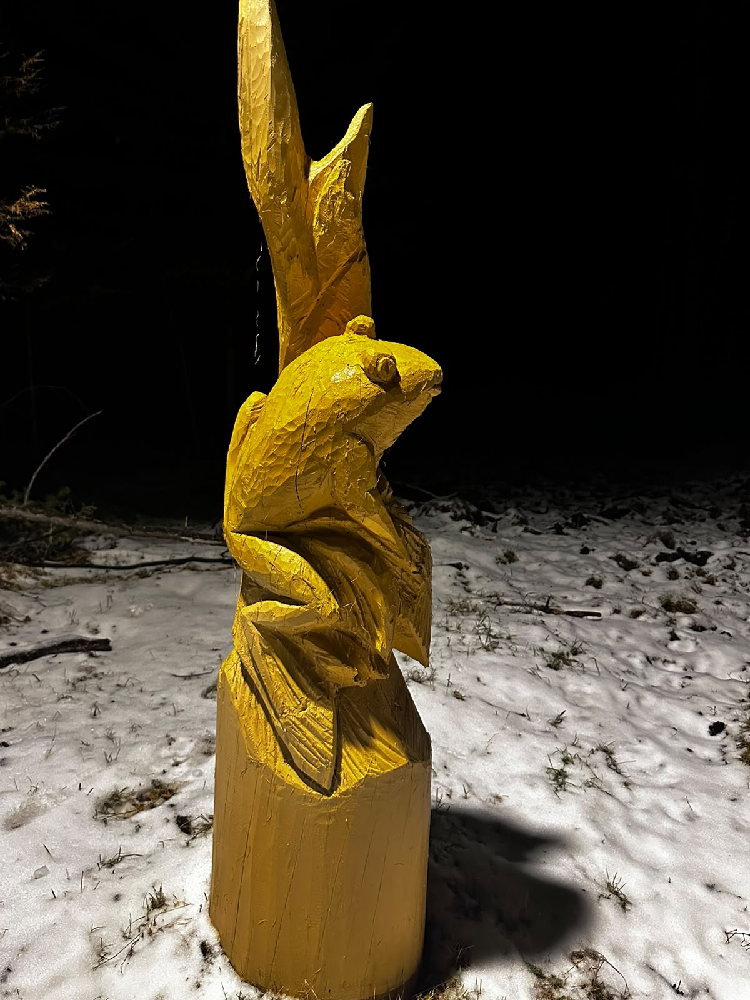

ПРИРОДА · ИСТОРИЯ · КУЛЬТУРА
Достопримечательности
Намского наслега
Добро пожаловать в Намский наслег! Наш мультимедийный путеводитель приглашает вас в уникальное интерактивное путешествие по сердцу Верхневилюйского улуса - селу Хомустах. Это место, где переплетаются великая история, самобытная культура и первозданная природа родного края.
Открывай историю родного края и береги его природу.
ИСТОРИЯ И ПАМЯТЬ РОДНОГО КРАЯ
Памятные места
Выбери место, чтобы познакомиться с ним поближе.
📝 Интерактивная викторина
Ответь на 10 вопросов о природе, истории и памятных местах Намского наслега. В конце получишь именной сертификат!
ПРИРОДА · ИСТОРИЯ · КУЛЬТУРА
Интерактивная викторина
Впереди 10 вопросов о тропе Хомустаха и памятных местах Намского наслега. Выбери один правильный ответ в каждом вопросе.
ВОПРОС ВИКТОРИНЫ
НАМСКИЙ НАСЛЕГ · СЕЛО ХОМУСТАХ
МБОУ Намская СОШ им. П.Н. Тобурокова
Сертификат о прохождении интерактивной викторины
Настоящий сертификат выдан
за участие в интерактивной викторине и знакомство с природой и историей родного края.
Эко-путешествие по тропе Хомустаха
Автор проекта: Романова Анжелика
ПРИРОДА · ТВОРЧЕСТВО · ИССЛЕДОВАНИЕ
Эко-тропа Тобурокова
Познакомься с деревянными животными, узнай интересные факты и отправляйся исследовать тропу.
.jpg)
Пётр Тобуроков
Особенность экологической тропы заключается в синтезе слова и пластического искусства. Мастер Алексей Федосеев, член Союза художников России, смог перевести метафоры и образы из детских и анималистических стихотворений П. Н. Тобурокова на язык объёмной деревянной скульптуры. Каждая фигура на тропе — это не просто лесной зверь, это конкретный персонаж со своим характером, сошедший со страниц книг народного поэта. Благодаря этому тропа превращается в открытую книгу, которую посетитель "читает" во время прогулки. Текстура дерева, естественные изгибы ветвей и глубинная связь якутского мастера с природой подчёркивают бережное отношение самого поэта к родному краю».
МИНИ-КВЕСТ ЭКО-ТРОПЫ
🔎 Найди деревянных животных!
Найди скульптуру на тропе и отсканируй QR-код рядом с ней.
Неизвестное животное
Секретная карточка откроется после сканирования QR-кода на тропе.

Баҕа
Ты нашёл это животное!
Хочешь увидеть тропу целиком?
Совет юному экологу
Наблюдай за природой бережно: не шуми, не оставляй мусор и не тревожь животных.
🎬 Видео тропы Хомустаха
ЭКО-ТРОПА ХОМУСТАХА
Другие деревянные скульптуры
Фотографии деревянных фигурок, которые можно встретить на тропе.